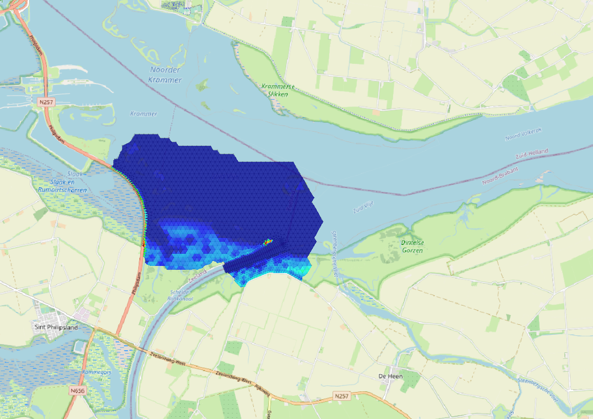
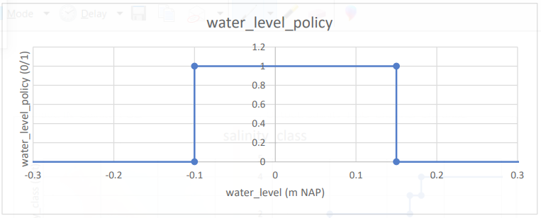
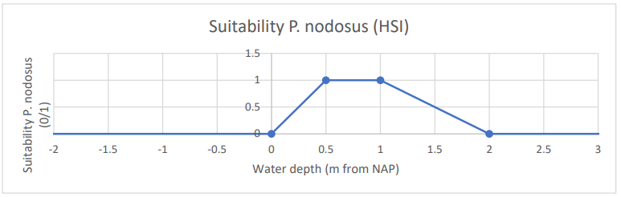
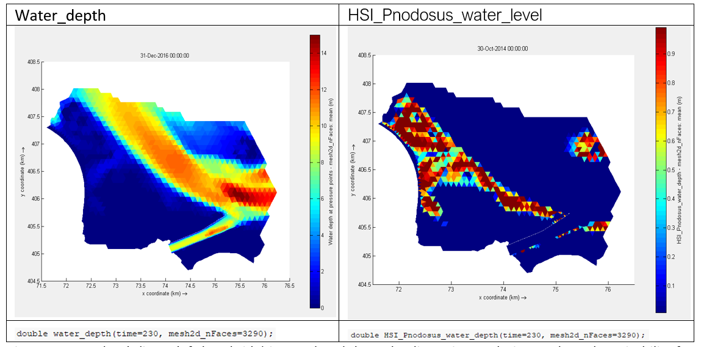
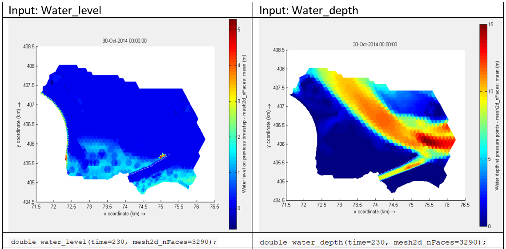
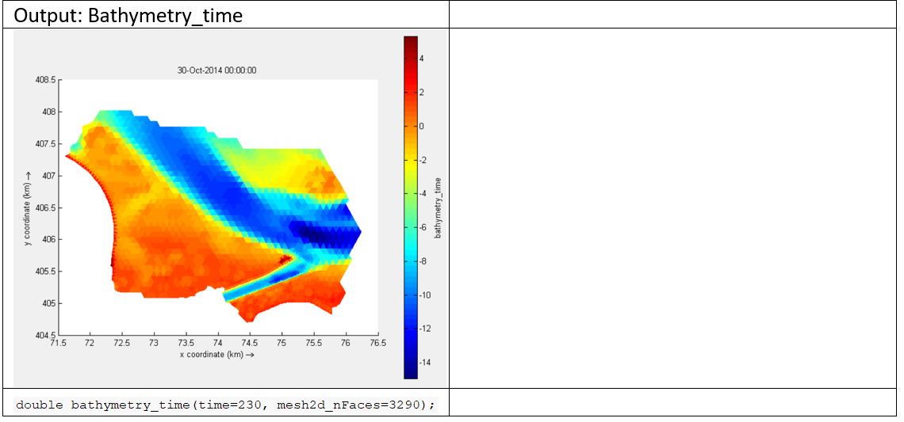
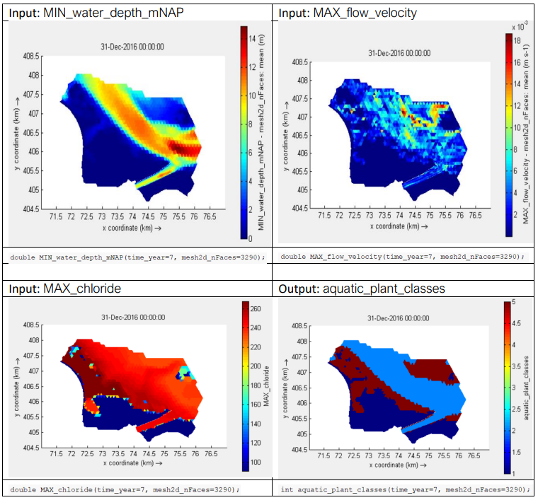
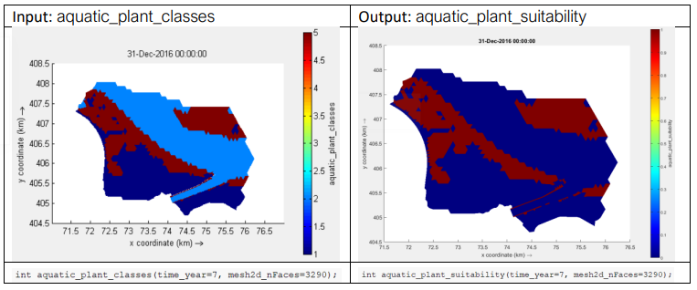
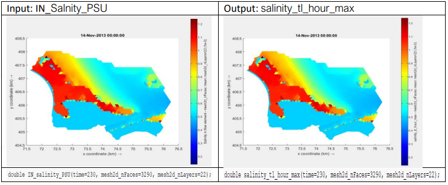

Structure of the model input file and functionality
D-Eco Impact is steered through a YAML input file. This input file informs the model which data to use, what ecological knowledge rules to apply and where to write the output data. The easiest way to edit these YAML files is by using Notepad++. When starting with your first application with D-Eco Impact, make use of earlier models to setup your YAML input file and edit from there. When running the YAML file with D-Eco Impact, the model will inform you if there are inconsistencies in the file provided.
Importing and exporting data
Importing and exporting data is always arranged in the input-data and output-data header in the YAML file.
version: …………………….
input-data:
…………………….
rules:
…………………….
output-data:
…………………….
In the input data the variables that are present in the input data provided through “filename” are selected for use. It is possible to filter the input data by providing a start date or end date (format: "dd-mm-yyyy"); this is optional. The variables that are used can be selected under “variable_mapping”. Here you are also able to rename variables as the name used for storage is often cryptic.
At output data the location where the output file needs to be written can be provided through “filename”. In this output file only variables that have been used from the input data and variables that have been created in the model are stored. It is possible to reduce the file size with the optional parameter "save_only_variables", which can take the name of one or several variables. The model needs at least one rule under “rules” to execute.
#FORMAT
version: <D-Eco_Impact_version_nr>
input-data:
- dataset:
filename: <path_to_file_including_file_name_and_type>
start_date: "<start_date>"
end_date: "<end_date>"
variable_mapping:
<variable1_input_file>: "<variable1_name_in_model>"
<variable2_input_file>: "<variable2_name_in_model>"
………
rules:
………
output-data:
filename: <path_to_file_including_file_name_and_type>
save_only_variables: <variable, or list_of_variables>
#EXAMPLE : Reading and writing an example model of the Volkerak-Zoommeer
version: 0.1.5
# Mapping: mesh2d_sa1 : Salinity (PSU)
# mesh2d_s1 : Water level (m NAP)
# mesh2d_waterdepth : Water depth (m NAP)
input-data:
- dataset:
filename: examples/data/FM-VZM_0000_map.nc
start_date: "01-01-2011"
end_date: "31-12-2015"
variable_mapping:
mesh2d_sa1: "salinity"
mesh2d_s1: "water_level"
mesh2d_waterdepth: "water_depth"
rules:
- multiply_rule:
name: make variable test
description: Make a variable called test for testing purposes
multipliers: [1.0]
input_variable: water_depth
output_variable: test
output-data:
filename: examples/data_out/results_test8c.nc
save_only_variables: test
Functionality
The functionality is always arranged in the form of rules under the rules header in the yaml file.
version: …………………….
input-data:
…………………….
rules:
…………………….
output-data:
…………………….
The output of the following functionalities has been shown for a section of the Lake Volkerak 3D hydrodynamic model in the Netherlands. This hydrodynamic model output contains 6 years of data (2011 – 2016), with a timestep of 10 days. The 3D hydrodynamic model has been setup with 22 vertical layers and 3290 horizontal flexible mesh grid cells.

Rules
Multiply rule
- multiply_rule:
name: <name_of_rule_in_text>
description: <description_of_rule_in_text>
multipliers: [<value_to_multiply_with>]
input_variable: <one_input_variable_name>
output_variable: <one_output_variable_name>
- multiply_rule:
name: <name_of_rule_in_text>
description: <description_of_rule_in_text>
multipliers_table:
- ["start_date", "end_date", "multipliers"]
- [<DD-MM>, <DD-MM>, [<value_to_multiply_with>]]
- [<DD-MM>, <DD-MM>, [<value_to_multiply_with>]]
input_variable: <one_input_variable_name>
output_variable: <one_output_variable_name>
The multiply rule allows for multiplication of variables. This could be used for unit transformation (e.g., salinity to chloride) or scenario creation (e.g., water level 80% of existing value). The rule operates on all cells both 3D (in horizontal as vertical) as in the time axes. The same dimensions are returned at the output variable. The rule needs to be applied to an existing variable. A new variable is created when the rule is executed.
When using the multiply rule with a start and end date (or multiple start and end dates) all periods that are not covered will be set to NaN. In this way the multiply rule can also be used as a filter in time. NaNs are ignored by any further calculations (for example the time_aggregation_rule).
#EXAMPLE: Salinity (psu) to chloride (mg/l) in a freshwater environment.
- multiply_rule:
name: Salinity to chloride
description: Converts salinity (psu) to chloride (CL- mg/l) for fresh water environments
multipliers: [0.0018066, 1e5]
input_variable: salinity
output_variable: chloride
- multiply_rule:
name: Select only the summer half year for chloride
description: Select only the summer half year for chloride as this is important for plant growth
multipliers_table:
- ["start_date", "end_date", "multipliers"]
- ["15-04" , "15-09" , [1.0]]
input_variable: chloride
output_variable: chloride_grow_period
 has been translated in chloride (in mg/l, right-hand side) while maintaining the time, face and layer dimensions.")
Layer filter rule
FORMAT
- layer_filter_rule:
name: <name_of_rule_in_text>
description: <description_of_rule_in_text>
layer_number: <integer_nr_of_layer>
input_variable: <one_3D_input_variable_name>
output_variable: <one_output_variable_name>
The layer filter rule allows for the extraction of a layer from 3D variables. This could be used for extracting the top layer or bottom layer (e.g., from a multi layered model result). The rule operates on all layers in a 3D variable (in the vertical) as in the time axes and returns a 2D result with the time axes intact. The rule needs to be applied to an existing 3D variable. A new 2D variable is created when the rule is executed.
#EXAMPLE : Extracts the chloride concentration at surface.
- layer_filter_rule:
name: Extract chloride at surface
description: Extracts the chloride concentration at surface
layer_number: 22
input_variable: chloride
output_variable: chloride_top_layer
 in 3D has been filtered to a 2D result on only the 22 vertical layer (right-hand side) while maintaining the time and face dimensions.")
Time aggregation rule
FORMAT
- time_aggregation_rule:
name: <name_of_rule_in_text>
description: <description_of_rule_in_text>
operation: <statistic_opperation_applied>
time_scale : <time_aggregation_applied>
input_variable: <one_input_variable_name>
output_variable: <one_output_variable_name>
The time aggregation rule allows for calculating a statistical summary over the time axes of 3D and 2D variables. This could be used for calculating the maximum value over a year (e.g., for water level) or the minimum value over a month (e.g., oxygen concentration). The rule operates both on 3D variables and 2D variables as long as they have a time axis and returns a 3D or 2D result depending on input with the statistic calculated for a new time axis (e.g., year or month). Operations available: Add, Average, Median, Min, Max, period statistics, Stdev and Percentile(n). When using percentile, add a number for the nth percentile with brackets like this: percentile(10). Stdev calculates the standard- deviation over the time period. Under period statistics are explained further in the text.
Time aggregation available: Year, Month
The rule needs to be applied to an existing 2D/3D variable with time axis. A new 2D/3D variable with new time axis is created when the rule is executed. With a year timestep the result is written to the last day of the year, with a month timestep the result is written to the last day of the month per year.
#EXAMPLE : Calculate the maximum water level in a year.
- time_aggregation_rule:
name: Maximum water level year
description: Get maximum water level in a year
operation: MAX
time_scale: year
input_variable: water_level
output_variable: MAX_water_level_year
 with a timestep every 10 days has been summarized to the maximum for each year (right-hand side) while maintaining the face dimension (layer dimension is not present in this example, but would be maintained).")
Period statistics: Time aggregation rule with COUNT_PERIODS, AVG_DURATION_PERIODS, MIN_DURATION_PERIODS and MAX_DURATION_PERIODS
When the operation type period statistics is used, the user needs to make sure that the input data is always consisting of only 1 and 0. If there is no such layer, the user can make a combination of for example the classification rule together with the time aggregation rule. For example, water depth can be used to check whether the cells are dry or not (this can be done with a classification rule) and with the COUNT_PERIODS operation type in the time aggregation rule the number of consecutive periods within a year or month can be calculated (nr). AVG_DURATION_PERIODS, MIN_DURATION_PERIODS and MAX_DURATION_PERIODS take the respective statistic of the duration for those consecutive periods (duration).
#EXAMPLE:
Calculate the number of consecutive periods of dry time monthly
- classification_rule:
name: Classify dry time
description: Classify to 0 and 1 the dry time
criteria_table:
- ["output", "water_depth"]
- [0, ">0.10"]
- [1, "<0.10"]
input_variables: ["water_depth"]
output_variable: dry_time_classified
- time_aggregation_rule:
name: Count periods
description: Count periods
operation: COUNT_PERIODS
time_scale: month
input_variable: dry_time_classified
output_variable: COUNT_PERIODS_water_level_month
Step function rule
FORMAT
- step_function_rule::
name: <name_of_rule_in_text>
description: <description_of_rule_in_text>
limit_response_table:
- [ "limit", "response"]
- [<limit_value>, <response_value>]
- [<limit_value>, <response_value>]
input_variable: <one_input_variable_name>
output_variable: <one_output_variable_name>
The step function rule performs stepwise classification on the provided values of 3D and 2D variables time dependent arrays. This could be used for translating variables into classes (e.g., salinity classes based on salinity) or indicate suitable/unsuitable ranges (e.g., checking whether the water level falls between the maximum and minimum water level policy criteria). The rule operates both on 3D variables and 2D variables, independent of the time axes, and returns a binominal or classes in a 3D or 2D result, either with time axis, depending on input.
The rule needs to be applied to an existing 2D/3D variable with or without time axis. A new 2D/3D variable with or without time axis is created when the rule is executed.
#EXAMPLE : Salinity classes.
- step_function_rule:
name: Classify salinity
description: Make distinction between 0.0 – 0.5 , 0.5 – 1.2, 1.2 – 1.3 and >1.3 psu
limit_response_table:
- [ limit, response]
- [-999.0 , 0.0 ]
- [ 0.0 , 1.0 ]
- [ 0.5 , 2.0 ]
- [ 1.2 , 3.0 ]
- [ 1.3 , 4.0 ]
- [ 999.0 , 4.0 ]
input_variable: salinity
output_variable: salinity_class
 is translated in 4 distinct classes based on the shown relationship. The classes are based on 0.0 - <0.5 (class 1) 0.5 - <1.2 (class 2), 1.2 - <1.3 (class 3) and >1.3 (class 4).")
 is translated in 4 distinct classes (right-hand side) while maintaining the time, face and layer dimension. The classes are based on 0.0 - <0.5 (class 1) 0.5 - <1.2 (class 2), 1.2 - <1.3 (class 3) and >1.3 (class 4).")
#EXAMPLE : Check if the water level falls within the range of -0.10 and +0.15 m NAP.
- step_function_rule:
name: Check water level policy
description: Check if water level is within -0.10 (minimum) and +0.15 (maximum) m NAP
limit_response_table:
- [ limit, response]
- [-999.0 , 0.0 ]
- [ -0.10 , 1.0 ]
- [ 0.15 , 0.0 ]
- [ 999.0 , 0.0 ]
input_variable: water_level
output_variable : water_level_policy

 is translated in a False (0) or True (1) category by comparing it with a boundary policy (right-hand side) while maintaining the time and face dimension (layer dimension is not present in this example, but would be maintained). The boundary is that the water level is not allowed to be lower than -0.10 m NAP and higher than 0.15 m NAP.")
Response curve rule
FORMAT
- response_curve_rule:
name: <name_of_rule_in_text>
description: <description_of_rule_in_text>
response_table:
- [ "input", "output"]
- [<limit_value>, <response_value>]
- [<limit_value>, <response_value>]
input_variable: <one_input_variable_name>
output_variable: <one_output_variable_name>
The response curve rule performs a linear interpolation over the provided values of the variables of 3D and 2D variables time dependent arrays. This could be used for a fuzzy logic translation of variables into ecological responses to these variables (e.g., suitability for aquatic plants based on light availability). The rule operates both on 3D variables and 2D variables, independent of the time axes, and returns decimal or fractional values in a 3D or 2D result, either with time axis, depending on input.
The rule needs to be applied to an existing 2D/3D variable with or without time axis. A new 2D/3D variable with or without time axis is created when the rule is executed.
#EXAMPLE : Response of the habitat suitability of Long-leaf pond weed
# (Potamogeton nodosus) to water depth.
# Suitable between 0.0 – 2.0 m and highly suitable between 0.5 – 1.0 m
- response_curve_rule:
name: HSI Pond weed water depth
description: Reponse of Pond weed (Potamogeton nodosus) to water depth
response_table:
- ["input", "output"]
- [-999.0 , 0.0 ]
- [ 0.0 , 0.0 ]
- [ 0.5 , 1.0 ]
- [ 1.0 , 1.0 ]
- [ 2.0 , 0.0 ]
- [ 999.0 , 0.0 ]
input_variable: water_depth
output_variable: HSI_Pnodosus_water_depth


Combine results rule
FORMAT
- combine_results_rule:
name: <name_of_rule_in_text>
description: <description_of_rule_in_text>
operation: <statistic_opperation_applied>
input_variables: [<list with_input_variable_names>]
output_variable: <one_output_variable_name>
The combine results rule combines the output of two or more variables to one output variable. The way this data is combined depends on the operation chosen. This could be used for adding mutual exclusive results (e.g., habitat suitability based on flow velocity and water depth) or asses difference between results (e.g., waterlevel and bathymetry to get the water depth).The rule operates one or multiple 3D variables or 2D variables, independent of the time axes, as long as these all have the same dimensions and returns a single 3D or 2D result, either with time axis, depending on input.
Operations available: Add, Subtract, Multiply, Average, Median, Min and Max
The rule needs to be applied to an existing 2D/3D variables with or without time axis. A new 2D/3D variable with or without time axis is created when the rule is executed.
#EXAMPLE : Calculate bathymetry over time
# This is just an example, there is a variable bed level without time (mesh2d_flowelem_bl)
- combine_results_rule:
name: Calculate bathymetry
description: Calculate bathymetry over time by adding water level and water depth
operation: subtract
input_variables: ["water_level","water_depth"]
output_variable: bathymetry_time


Formula rule
FORMAT
- formula_rule:
name: <name_of_rule_in_text>
description: <description_of_rule_in_text>
formula: <statistic_opperation_applied>
input_variables: [<list with_input_variable_names>]
output_variable: <one_output_variable_name>
With the formula based rule multiple variables can be combined in a flexible way. Operations that are supported are the standard operators.
The rule needs to be applied to an existing 2D/3D variables with or without time axis. A new 2D/3D variable with or without time axis is created when the rule is executed.
#EXAMPLE : Calculate bathymetry over time
# This is just an example, there is a variable bedlevel without time (mesh2d_flowelem_bl)
- formula_rule:
name: Calculate bathymetry
description: Calculate bathymetry over time by adding water level and water depth
formula: water_level + water_depth
input_variables: ["water_level","water_depth"]
output_variable: bathymetry_time
A lot of operators are supported with the formula based rule. Given two variables "x" and "y", formulas can be implemented for the following operators:
| Operator | Name | Example |
|---|---|---|
| + | Addition | x + y |
| - | Subtraction | x - y |
| * | Multiplication | x * y |
| / | Division | x / y |
| % | Modulus | x % y |
| ** | Exponentiation | x ** y |
| // | Floor division | x // y |
When a formula results in a boolean, it will be converted to a float result. Meaning that True = 1 and False = 0. Comparison, logical, identity, identity and bitwise operators are supported:
| Operator | Name | Example |
|---|---|---|
| == | Equal | x == y |
| != | Not equal | x != y |
| > | Greater than | x > y |
| < | Less than | x < y |
| >= | Greater than or equal to | x >= y |
| <= | Less than or equal to | x <= y |
| // | Floor division | x // y |
| and | Returns True if both statements are true | x < 5 and x < 10 |
| or | Returns True if one of the statements is true | x < 5 or x < 4 |
| not | Reverse the result, returns False if the result is true | not(x < 5 a |
| is | Returns True if both variables are the same object | x is y |
| is not | Returns True if both variables are not the same object | x is not y |
| in | Returns True if a sequence with the specified value is present in the object | x in y |
| not in | Returns True if a sequence with the specified value is not present in the object | x not in |
| Operator | Name | Description | Example |
|---|---|---|---|
| & | AND | Sets each bit to 1 if both bits are 1 | x & y |
| | | OR | Sets each bit to 1 if one of two bits is 1 | x | y |
| ^ | XOR | Sets each bit to 1 if only one of two bits is 1 | x ^ y |
| ~ | NOT | Inverts all the bits | ~x |
| << | Zero fill left shift | Shift left by pushing zeros in from the right and let the leftmost bits fall off | x << 2 |
| >> | Signed right shift | Shift right by pushing copies of the leftmost bit in from the left, and let the rightmost bits fall off | x >> 2 |
For more information on these operators click here.
(Multiple) Classification rule
FORMAT
- classification_rule:
name: <name_of_rule_in_text>
description: <description_of_rule_in_text>
criteria_table:
- [ "output" , <input_variable_name1>, <input_variable_name2>]
- [<response_value>, <criteria_range>, <criteria_range>]
- [<response_value>, <criteria_range>, <criteria_range>]
input_variables: [<list with_input_variable_names>]
output_variable: <one_output_variable_name>
The classification rule allows for the classification based on the range of one or multiple input vairables. The value range can be indicated in multiple ways. This rule can be used for indicating suitability (0 or 1) or specify categories (1,2,3 etc). The rule will start with the last given criteria range row and work upwards, hence overwriting is possible. Currently there is no check whether possible ranges have been missed or are overlapping.
The rule needs to be applied to an existing 2D/3D variables with or without time axis. A new 2D/3D variable with or without time axis is created when the rule is executed.
Criteria ranges available are:
| Criteria range | Example | Description |
|---|---|---|
| "-" | "-" | Value is not applicable to category, all is allowed |
| "criteria_value" | "5" | Value is exectly the criteria value (only applicable for integers) |
| ">criteria_value" | ">1" | Value needs to larger than criteria value |
| "<criteria_value" | "<0.5" | Value needs to be smaller than criteria value |
| ">criteria_value" | ">=1" | Value needs to larger than or equal to criteria value |
| "<criteria_value" | "<=0.5" | Value needs to be smaller than or equal to criteria value |
| "criteria_value1:criteria_value2" | "0.2:4" | Value needs to be equal or be in between criteria_value1 and criteria_value2 |
#EXAMPLE : Determine the suitability for aquatic vegetation based on classification
- classification_rule:
name: Classification for aquatic plants
description: Derive the classification for aquatic plants based on water depth, flow velocity and chloride levels
criteria_table:
- ["output", "MIN_water_depth_mNAP", "MAX_flow_velocity", "MAX_chloride"]
- [ 1 , "<0.10" , "-" , "-"] # too dry
- [ 2 , ">4.0" , "-" , "-"] # too deep
- [ 3 , "-" , "-" , ">400"] # too salty
- [ 4 , "-" , ">1.5" , "-"] # too fast flowing
- [ 5 , "0.10:4.0" , "0.0:1.5" , "0:400"] # perfect for aquatic plants
input_variables: ["MIN_water_depth_mNAP", "MAX_flow_velocity", "MAX_chloride"]
output_variable: aquatic_plant_classes
- classification_rule:
name: Suitability for aquatic plants
description: Derive the suitability for aquatic plants based on the classification
criteria_table:
- ["output", "aquatic_plant_classes"]
- [ 0 , "1:4"] # not suitable
- [ 1 , "5"] # suitable
input_variables: ["aquatic_plant_classes"]
output_variable: aquatic_plant_suitability


Rolling statistic rule
FORMAT
- rolling_statistics_rule:
name: <name_of_rule_in_text>
description: <description_of_rule_in_text>
operation: <statistic_opperation_applied>
time_scale : <time_step_unit_applied>
period: <time_step_value_applied>
input_variable: <one_input_variable_name>
output_variable: <one_output_variable_name>
The rolling statistic rule allows for a rolling statistic based on the chosen operation and the time period over which the statistic should be repeated. The calculated statistic will be written to each last timestep that falls within the period. Operations available: Add, Average, Median, Min, Max, count_periods, Stdev and Percentile(n). When using percentile, add a number for the nth percentile with brackets like this: percentile(10).
Time scales available: hour, day Period can be a float or integer value.
The rule needs to be applied to an existing 2D/3D variables with time axis. A new 2D/3D variable with the same time axis is created when the rule is executed.
An explanation of how the rolling statistic rule works is shown in the table below:
| timestep | 1 | 2 | 3 | 4 | 5 | 6 | 7 | 8 |
|---|---|---|---|---|---|---|---|---|
| period1 | - | - | - | i | ||||
| period2 | - | - | - | i | ||||
| period3 | - | - | - | i |
In the example shown above the stripe indicates the time period covered (4 timesteps in this case) and with i the location where the result of the statistic over that period is written. Hence, the first three timesteps in this example will not contain any values. This is repeated until the time series has been covered.
#EXAMPLE : Determine a rolling statistic over salinity levels
- rolling_statistics_rule:
name: test rolling statistic 12.5 hours
description: test rolling statistic 12.5 hours
operation: MAX
time_scale: hour
period: 12.5
input_variable: IN_salinity_PSU
output_variable: salinity_tl_hour_max
- rolling_statistics_rule:
name: test rolling statistic 7 days
description: test rolling statistic 7 days
operation: MAX
time_scale: day
period: 7
input_variable: IN_salinity_PSU
output_variable: salinity_tl_week_max

 is translated to an weekly statistic (in PSU, right-hand) while maintaining the time and face dimension (layer dimension is not present in this example, but would be maintained).")
Axis filter rule
FORMAT
- axis_filter_rule:
name: <name_of_rule_in_text>
description: <description_of_rule_in_text>
layer_number: <integer_nr_of_layer>
axis_name: <name_of_axis_applied>
layer_number: <integer_nr_of_layer_in_axis_applied>
input_variable: <one_3D_input_variable_name>
output_variable: <one_output_variable_name>
The axis filter rule is close to the layer_filter_rule, however it allows for filtering on any axis present in the data. This allows for the selection of a specific time step, spatial cell or other data axis value.
The rule needs to be applied to an existing 2D/3D variables with or without time axis. A new 2D/3D variable with or without time axis is created when the rule is executed, with the exception of the axis that was filtered upon.
#EXAMPLE : Select only the salinity in the cell for the channel entrance from the faces
- axis_filter_rule:
name: Filter face of channel entrance (13th face cell)
description: Filter face of channel entrance (13th face cell)
axis_name: mesh2d_nFaces
layer_number: 13
input_variable: IN_salinity_PSU
output_variable: salinity_PSU_channel_entrance
 is subset so that only face cell 13 is left (channel entrance) reducing the data to a 2D salinity plot for multiple time steps (in PSU, right-hand) while maintaining in this case the time dimension and layer dimension (face dimension is selected upon in this example and is therefore omitted in the results).")
Including data from another YAML file
It is possible to include data in the YAML file that originates from another file. At the moment this is only applicable to another YAML file. This can be useful for storing large classification_rule tables in a separate file (for a better overview of the work file), but this functionality is not limited to that specific rule.
Here is the original rule:
#EXAMPLE : Original
# This is a simplified example, only top layer of flow velocity and chloride was used and year statistics
- classification_rule:
name: classification for aquatic plants
description: classification for aquatic plants based on water depth, flow velocity and chloride.
criteria_table:
- ["output", "MIN_water_depth_mNAP", "MAX_flow_velocity", "MAX_chloride"]
- [ 1 , "<0.10" , "-" , "-"] # too dry
- [ 2 , ">4.0" , "-" , "-"] # too deep
- [ 3 , "-" , "-" , ">400"] # too salty
- [ 4 , "-" , ">1.5" , "-"] # too fast flowing
- [ 5 , "0.10:4.0" , "0.0:1.5" , "0:400"] # perfect for aquatic plants
And this is the rule while making using of an inclusion from another file:
#EXAMPLE : Original
# This is a simplified example, only top layer of flow velocity and chloride was used and year statistics
- classification_rule:
name: classification for aquatic plants
description: classification for aquatic plants based on water depth, flow velocity and chloride.
criteria_table: !include tables/aquatic_plant_criteria.yaml
input_variables: ["MIN_water_depth_mNAP", "MAX_flow_velocity", "MAX_chloride"]
output_variable: aquatic_plant_classes
And this is the included file from tables/aquatic_plant_criteria.yaml:
- ["output", "MIN_water_depth_mNAP", "MAX_flow_velocity", "MAX_chloride"]
- [ 1 , "<0.10" , "-" , "-"] # too dry
- [ 2 , ">4.0" , "-" , "-"] # too deep
- [ 3 , "-" , "-" , ">400"] # too salty
- [ 4 , "-" , ">1.5" , "-"] # too fast flowing
- [ 5 , "0.10:4.0" , "0.0:1.5" , "0:400"] # perfect for aquatic plants